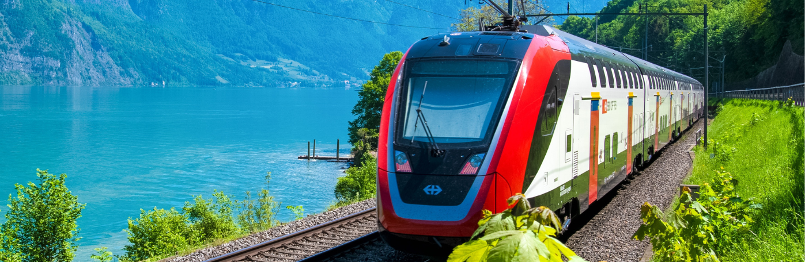

When a patient in Bangalore needs to travel hundreds of kilometres for specialised treatment, every hour on the road adds risk. Save Life Wellness runs a dedicated train ambulance service in Bangalore that moves critically ill and stable patients across India inside an ICU-equipped train coach — combining the medical safety of an ambulance with the speed and comfort of rail travel.
Our team manages everything end to end: assessing the patient, booking the coach with Indian Railways, arranging road ambulances at both ends, and staffing the journey with doctors, nurses, and paramedics who monitor the patient mile after mile. Whether the destination is Delhi, Mumbai, Chennai, Kolkata, Hyderabad, or Patna, Save Life Wellness makes sure the patient reaches the next hospital in the same condition they left the last one.
Call +91-9835309230 anytime, day or night, for an immediate quote and booking.
Save Life Wellness is led by Mr. Sumit Jha, who has spent 8+ years working in patient transport and inter-city medical shifting, coordinating bed-to-bed transfers between Bangalore and major hospitals across India. That hands-on experience — knowing which stations have step-free platform access, which railway offices to coordinate with for last-minute coach approvals, and how to time a transfer so a patient spends minimum time in transit — shapes how every case is planned and run.
A train ambulance is not a special train run by the railways — it is a private compartment or coach, usually in 2nd AC, that Save Life Wellness converts into a mobile ICU. The berth becomes a hospital bed, and portable medical equipment — oxygen cylinders, cardiac monitors, ventilators, and infusion pumps — travels with the patient for the length of the journey.
It sits between two other options families in Bangalore often consider:
A train ambulance covers the middle ground — long-distance, medically supervised transport at a fraction of air ambulance cost, without the fatigue of a multi-day road trip.
Depending on the patient's location and the destination route, our team books and manages coaches from:
We confirm the correct station for your specific route and train availability at the time of booking, and handle the platform-to-coach transfer using a scoop stretcher at whichever station applies.
Our road ambulance team is experienced in coordinating pickups from major Bangalore hospitals, including:
If a patient is being discharged from a hospital not listed here, we still manage the pickup — this list reflects our most frequent transfers, not the limits of where we operate.
For patients who need continuous critical care, our coaches are fitted with ventilators, cardiac monitors, defibrillators, suction machines, infusion pumps, and emergency medication kits, all monitored by an onboard medical team.
We handle the entire journey, not just the train leg. A road ambulance picks the patient up from their home or hospital bed in Bangalore, transfers them to the platform using a scoop stretcher designed to move safely through train doors, and another ambulance is waiting at the destination station to complete the trip to the receiving hospital or home.
Not every transfer needs full ICU support. For stable patients who simply need supervision, we provide a trained medical escort Such as, Emergency Medical Technicians to accompany them and manage any medication or monitoring needs along the way.
Infants and children have different equipment and staffing needs. Our team arranges appropriately sized equipment and paediatric-experienced staff for these transfers.
Booking a private compartment for medical use requires railway approvals and documentation. Save Life Wellness handles this coordination directly so families don't have to navigate railway procedures during an already stressful time.
Medical emergencies don't wait for business hours. Our booking line and coordination team operate around the clock, every day of the year.
Pricing depends on distance, the level of medical support required, and equipment on board. As a general guide:
| Service Level | What's Included | Typical Cost |
|---|---|---|
| Semi-ICU Train Ambulance | ICU-trained staff/paramedic, oxygen, cardiac monitor, infusion pump, nebulizer, glucometer, emergency drugs | ₹50,000 – ₹70,000 |
| Full ICU Train Ambulance | All semi-ICU features plus ventilator, BiPAP support, and specialist doctor where required | ₹70,000 – ₹90,000 |
Final pricing varies with the specific route, train availability, and the patient's medical needs. Call us for a transparent, no-obligation quote before you book.
"Save Life Wellness Train Ambulance provided excellent service when we needed to transport my father from Bangalore to Delhi for advanced medical treatment. Especially Thanks to Mr. Mayank Pradhan" — Ravi Kumar, Bangalore
"The staff at Save Life Wellness Train Ambulance were very supportive and made sure everything was arranged perfectly. The journey was smooth and my mother received the best care possible." — Anita Sharma, Bangalore
A train ambulance carries the patient in an ICU-converted rail coach — faster and less tiring than road transport over long distances, and considerably more affordable than an air ambulance, while still offering continuous medical monitoring.
Yes. Our full-ICU train ambulance service includes ventilator support and specialist doctors for patients who need advanced respiratory or cardiac monitoring during transit.
We recommend at least 24–48 hours to coordinate railway approvals, confirm compartment availability, and arrange road ambulances at both ends. In genuine emergencies, call us directly and we will do everything possible to expedite the process.
We handle the complete bed-to-bed transfer — road ambulance pickup from the patient's location in Bangalore, the train journey itself, and a road ambulance to the final hospital or home at the destination.
We regularly arrange train ambulance transfers from Bangalore to Delhi, Mumbai, Kolkata, Chennai, Hyderabad, Patna, and other major cities across India.
Costs typically range from ₹50,000 for semi-ICU support to ₹70,000 or more for full-ICU transfers, depending on distance and the level of care required. Call us for an exact quote based on your case.
If your family is facing a long-distance medical transfer from Bangalore, don't leave it to chance. Save Life Wellness combines medical expertise, railway coordination, and end-to-end logistics so you can focus on your loved one, not the arrangements.
Save Life Train Ambulance is dedicated to providing the best train ambulance service in Bangalore, ensuring that patients receive the highest standard of care and comfort during their journey. Let us be your trusted partner in medical transportation.